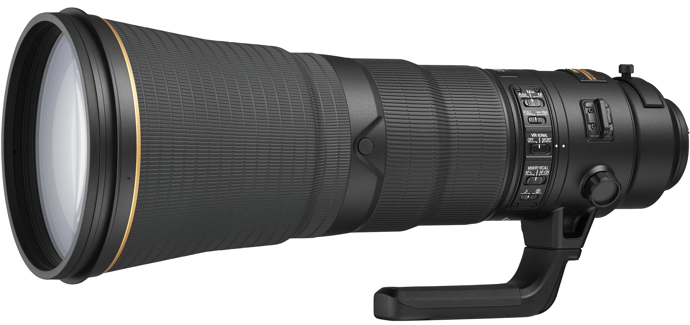
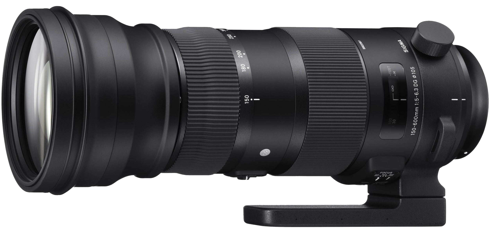

Best cameras for Wildlife Photography.
Following is a selection of the best and newest DSLRs, both full-frame and APS-C, which we recommend for wildlife photography.These cameras represent the latest options from the two most prominent camera makers.
Canon EOS-1D X Mark II

Fast shutter! Needs faster lens! Expensive!
Canon’s newest professional DSLR is an excellent choice for wildlife photography. It’s the fastest DSLR currently available, with 14 fps capture using the optical viewfinder or up to 16 fps when shooting in Live View. The AF system is also impressive, with 61 AF points, 41 of which are cross-type, all of which are compatible with apertures as small as ƒ/8.
- Sensor: 20.2 MP Full-Frame
- AF Points: 61
- Max Frame Rate: 16 fps
- Max Burst: 170 RAW
- ISO Range (Expanded): 100–51,200 (409,600)
- Price: $5,999
Nikon D500

More affordable! More AF Points! Slightly slower shutter!
The D500 includes the same new AF system as the top-end pro D5, as well as its new EXPEED 5 processor. Though it’s not quite as fast as the D5, it’s still very speedy at its max rate of 10 fps. It also features the same level of weather sealing as the pro-model D810, and though less than the D5’s astronomical ISO max, offers a remarkable ISO range, expandable to 1,640,000.
- Sensor: 20.9 MP APS-C
- AF Points: 153
- Max Frame Rate: 10 fps
- Max Burst: 79 RAW
- ISO Range (Expanded): 100–51,200 (1,640,000)
- Price: $1,999
Nikon D5

Fast shutter! Needs faster lens! Expensive!
Nikon’s new flagship is ideal for wildlife, promising extremely fast and precise AF, with 153 AF points, 99 of which are cross-type, and 15 that can function at apertures as small as ƒ/8. The AF system also features a dedicated processor, and works in extremely low-light conditions, down to -4 EV. It can capture 12 fps using the viewfinder or 14 fps with the mirror locked up.
- Sensor: 20.8 MP Full-Frame
- AF Points: 153
- Max Frame Rate: 14 fps
- Max Burst: 200 RAW
- ISO Range (Expanded): 100–102,400 (3,280,000)
- Price: $6,499
Canon EOS 80D
More affordable! Lightweight! Slower shutter!
Another new model from Canon, this APS-C DSLR features a 45-point AF system, all of which may be cross-type (depending on the lens selected). The AF system is also compatible with apertures of ƒ/8 or larger. Like the new EOS-1D X Mark II, the AF system can function in low-light situations down to -3 EV, which is approximately the luminance of moonlight.
- Sensor: 24.2 MP APS-C
- AF Points: 45
- Max Frame Rate: 7 fps
- Max Burst: 25 RAW
- ISO Range (Expanded): 100–16,000 (25,600)
- Price: $1,199
Best lenses for Wildlife Photography.
When it comes to selecting lenses for wildlife photography, the first thing most photographers look for is focal length. Vibration reduction makes lenses more easily handholdable and a large maximum aperture, such as ƒ/2.8, is also helpful for shooting in low light and at fast shutter speeds. Following is a selection of the best lenses you can choose.
Canon EF 600mm F4L IS II USM

Canon shooters who want the longest and fastest lenses available will look to the EF 600mm ƒ/4L IS II USM prime. The focal length offer extreme reach for photographing big game on safari or when access to animals is limited and an extreme focal length can fill the frame for an animal portrait even from a hundred yards away. In some national parks, regulations limit how close photographers can get to wildlife like bears and wolves. Having the ability to reach out across that 100-yard gap can be the difference between getting the shot and missing it. This reach, of course, comes with a price: nearly $12,000.
AF-S NIKKOR 200-500mm ƒ/5.6E ED VR
One of Nikon’s newest lenses is a super-telephoto zoom that covers a whopping range that’s perfect for wildlife photographers, even on the short end. The AF-S NIKKOR 200-500mm ƒ/5.6E ED VR has built-in optical vibration reduction, delivering 4.5 stops of additional handholdability, yet the lens remains fairly compact thanks to the ƒ/5.6 maximum aperture, which is constant across the zoom range. The VR’s “sport mode” is perfect for panning with a fast-moving subject—such as a bird in flight or a sprinting cheetah. The nine-bladed aperture helps to create pleasing bokeh in the out-of-focus area of an image, too.
AF-S NIKKOR 600mm ƒ/4E FL ED VR

For photographers with deep pockets who want tremendous telephoto reach,the AF-S NIKKOR 600mm ƒ/4E FL ED VR prime offer powerful vibration reduction up to four stops. With a fast ƒ/4 maximum apertures, it utilizes Nikon’s Electromagnetic Diaphragm to ensure consistent exposures from frame to frame during burst shooting, and while it won’t be confused for compact primes, they utilize fluorite elements that not only reduce weight, but improve the optical quality of the glass. The magnesium frame is particularly durable for serious outdoor expeditions—which is especially important given the high cost of this prime glass. The600mm lens retails for more than $12,000.
Sigma 150-600mm ƒ/5-6.3 DG OS HSM

Sigma offers Contemporary and Sports versions of its 150-600mm ƒ/5-6.3 DG OS HSM super-telephoto zoom. Wildlife photographers may prefer the Sports model, which is slightly larger, but features more rugged construction and more elements than the Contemporary model—two FLD and three SLD elements, as opposed to one and three, respectively. The built-in optical image stabilization uses an accelerometer for improved panning, both horizontally and vertically. Enhanced autofocus and a Hyper Sonic Motor ensure fast and quiet focusing, while a manual override switch provides maximum control. The lens is available for Canon, Nikon and Sigma mounts, and is customizable via the Sigma USB Dock. The estimated street prices are $989 (Contemporary version) and $1,799 (Sports version).
Tamron SP 150-600mm Di VC USD

A great value for full-frame Canon, Nikon and Sony shooters, the Tamron SP 150-600mm Di VC USD super-telephoto zoom provides a versatile range at an accessible price. Vibration compensation helps steady shots when working at the long end of the focal range, and the variable maximum aperture helps to keep the lens compact—at least by 600mm telephoto standards—and to keep the cost down, too. The estimated retail price is $1,100.
This are some examples of photos taken with these equipment.

These photos do not belong to me. They were shared by other Flickr members.